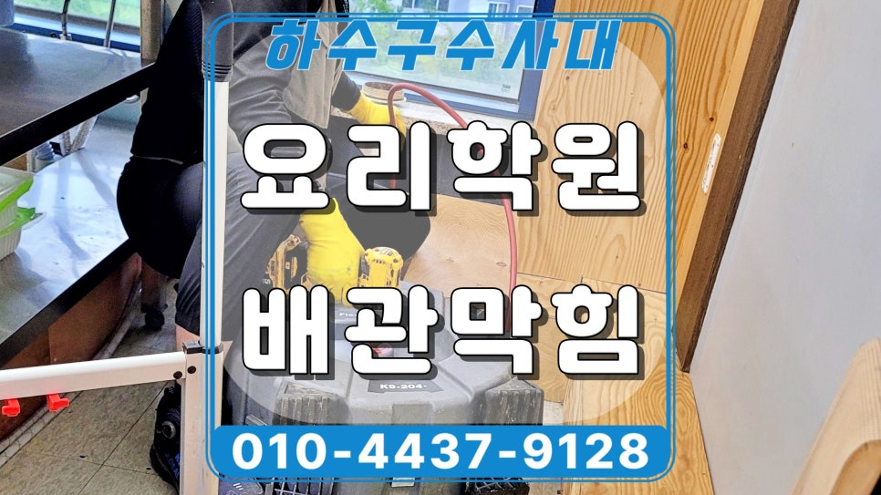
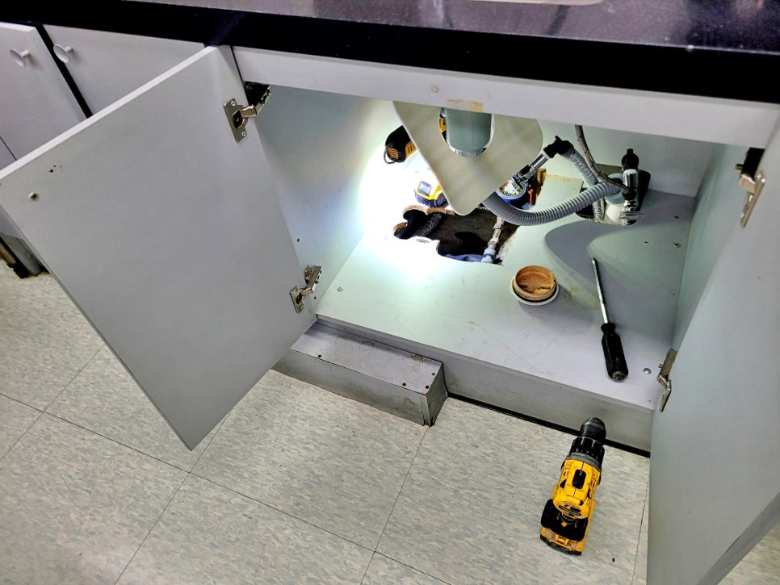
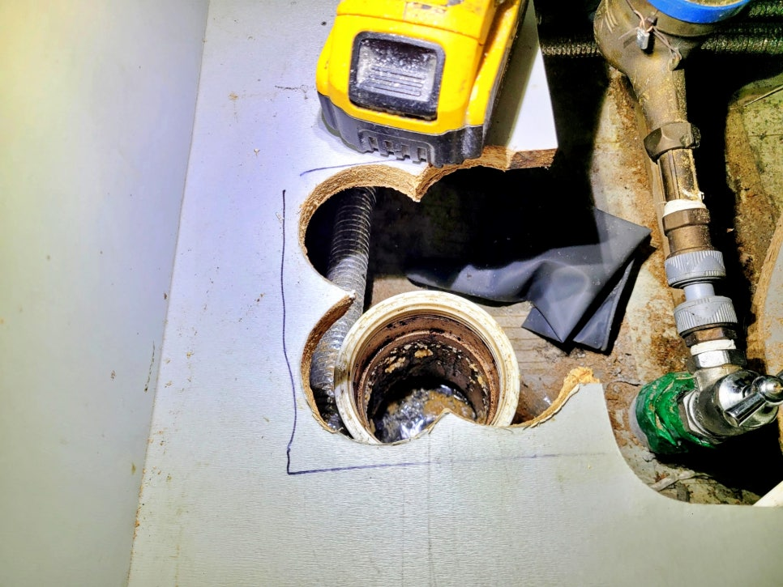
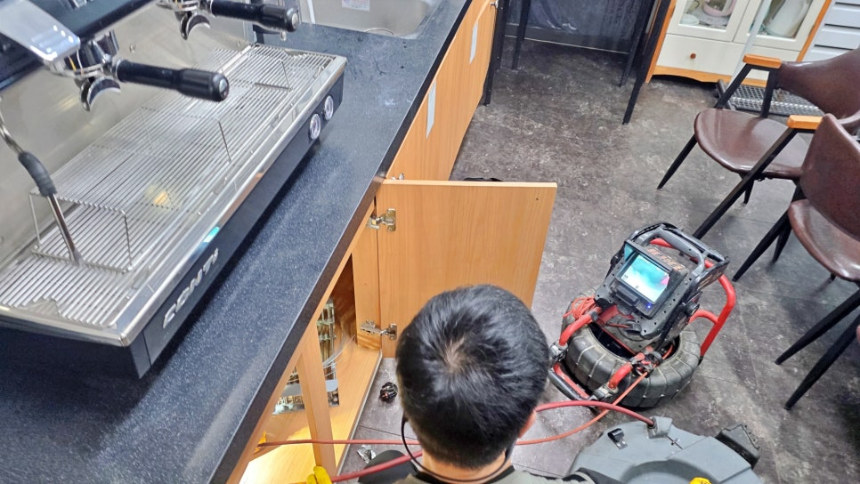
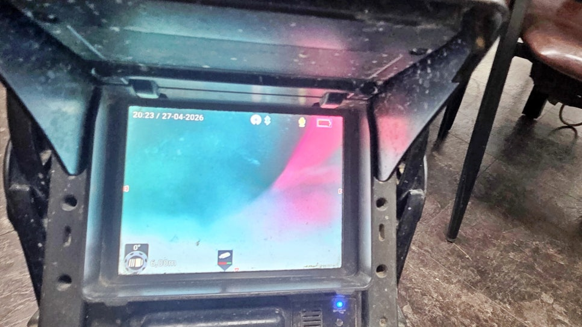
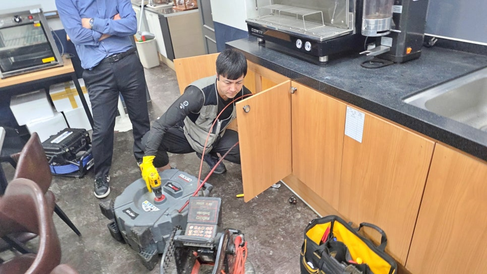
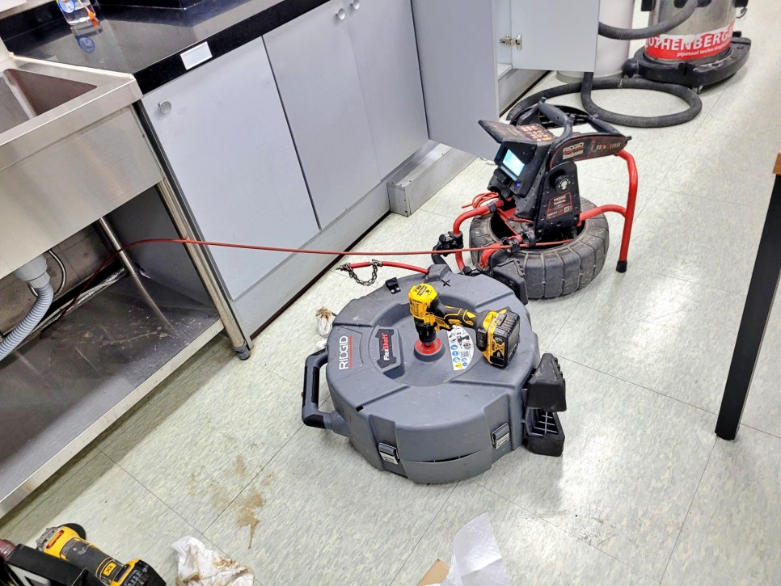

🏠 동탄 반송동 요리학원 하수구역류, 배수구 청소 현장
용인 반송동 싱크대막힘 전문 시공 후기

📋 작업 개요
- 위치: 용인 반송동, 반송동, 용인
- 서비스 유형: 싱크대막힘, 하수구막힘, 배관막힘, 누수수리, 역류해결, 뚫는업체, 배관청소
- 작업 일시: 2026. 5. 21. 13:00
- 업체명: 하수구수사대 (010-5615-2118)
🔍 문제 상황
동탄 반송동 요리학원 하수구역류,
배수구 청소로 기름때 제거 완료.
안녕하세요.
동탄 반송동 하수구역류 배수구 청소
전문업체 하수구수사대입니다.
이번 현장은 동탄 반송동에 있는
요리학원 주방에서 수업 중 싱크대 물을
많이 사용하면 바닥 배수구 쪽으로
물이 역류한다는 연락을 받고 출동한
사례입니다.
동탄 반송동 요리학원 하수구역류 현장
동탄 반송동 하수구역류 현장에 도착해
싱크대 하부장과 배수구 주변을 먼저
살펴봤는데요. 겉으로 보기에는
하수관이 크게 손상된 상태는 아니었지만,
물을 사용할 때마다 물이 역류하는 흐름이
보였습니다.
동탄 반송동 싱크대 하수구역류 원인
배수구 입구에 쌓인 기름층
싱크대 아래쪽 배관 입구를 열어보니
안쪽에 기름때와 음식물 찌꺼기가
엉겨 붙은 흔적이 뚜렷했습니다.
요리학원은 수업 특성상 물 사용량이 많고
기름 성분이 배관으로 자주 흘러들어가
막힘이 빠르게 쌓일 수 있습니다.

🔎 원인 분석
💡 전문가 진단: 동탄 반송동 요리학원 하수구역류,배수구 청소로 기름때 제거 완료.
내시경 카메라 점검 과정
정확한 막힘 위치를 보기 위해
배관 내시경 장비를 투입했는데요.
눈에 보이는 입구만 닦는 방식으로는
다시 역류가 생길 수 있기 때문에
배관 안쪽 상태를 점검하는 과정이
중요합니다.
동탄 반송동 하수구역류 원인을 찾기
위해 내시경 화면을 보니 내부에
기름막이 두껍게 형성되어 있었고,
물길이 좁아진 구간도 보였습니다.
이런 상태에서는 싱크대 사용량이
조금만 많아져도 물이 빠지지 못하고
바닥 쪽으로 역류하게 되는것인데요.
내시경 화면을 보며 샤프트 작업 중
작업은 배수구 쪽에서 샤프트 노즐을 넣어
배관 안쪽 기름때를 제거하는 방식으로
진행했습니다. 단순히 뚫는 데서 끝내지
않고 배관 벽면에 붙은 찌꺼기까지
긁어내야 재발 가능성도 줄어들고
배수 흐름도 좋아질 수 있기 때문입니다.
샤프트 노즐을 반복해서 넣고 빼며
막힌 구간을 조금씩 청소했는데요.
안쪽에 굳은 기름이 많을수록
한 번에 끝내기보다 여러 차례 나누어
작업하는 편이 더 안전합니다.

🔧 작업 과정
동탄 반송동 요리학원 하수구역류
청소 작업 중간중간 내시경 화면을
다시 보며 청소가 제대로 이루어지는지
살폈고요.
기름이 남은 구간이 있으면 다시 같은
문제가 생길 수 있어 화면으로 흐름을
보면서 작업 범위를 잡았습니다.
배수구 청소 후에는 싱크대 물을 충분히
흘려보내 배수 상태를 살폈습니다.
처음처럼 물이 밀리거나 바닥 배수구로
역류하는 증상은 나타나지 않았고,
물이 자연스럽게 빠지는 상태로
회복되었습니다.
요리학원처럼 주방 사용량이 많은 곳은
배관 안에 기름기가 쌓이는 속도가
일반 가정보다 빠른 편입니다.
중간 소재구에서 샤프트 작업 중
참고로 조리 후 남은 기름은
바로 흘려보내기보다 키친타월로 먼저
닦아내는 것이 좋고, 뜨거운 물만
흘려보낸다고 해서 배관 안쪽 기름때가
완전히 없어지는 것은 아닌데요.
오히려 뜨거운 물을 반복적으로
붓다 보면 하수관이 변형되거나
손상돼 누수와 같은 더 큰 문제가
발생할 수도 있으니 각별한 주의가
필요합니다.
만약 배수가 조금 느려지거나
바닥 배수구에서 냄새가 올라오는
느낌이 있다면 막힘이 심해지기 전에
전문가의 점검을 받는 것이 좋은데요.
특히 수업 시간에 여러 명이
동시에 싱크대를 사용하는 공간은
작은 배수 불량도 금방 하수구역류로
이어져 문제가 해결될 때까지
수업 운영에 차질이 생길 수도
있습니다.
반송동 싱크대 하수구역류 청소를 마치며
이번 동탄 반송동 요리학원 현장은
싱크대 사용 중 생긴 하수구역류 원인을


✅ 작업 완료
배관 내부 기름막과 찌꺼기에서 찾았고,
내시경 점검과 배수구 청소 작업으로
배수 흐름을 다시 잡아드린 사례인데요.
하수구수사대는 언제나 현장 상태를
꼼꼼하게 점검해 보고 필요한 장비로
원인부터 작업 결과까지
꼼꼼하게 살펴 진행하고 있습니다.
지금까지
배수구 청소 후기를 읽어 주셔서
감사합니다.
#동탄반송동하수구역류 #동탄배수구청소업체 #반송동하수구막힘 #요리학원하수구역류 #동탄싱크대배수구청소업체 #동탄주방배관청소 #반송동싱크대배관청소 #하수구수사대




⚠️ 베란다 누수 및 방수 관리 방법
- ✅ 비가 많이 올 때 창틀 주변이나 아래층 천장에 얼룩이 생기는지 정기적으로 확인해 보세요.
- ✅ 우수관 주변 실리콘 마감이 들뜨거나 깨진 틈새가 있는지 손상 여부를 수시로 체크하세요.
- ✅ 베란다 바닥 타일의 줄눈(메지)이 소실되면 그 틈으로 물이 침투하여 누수가 유발됩니다.
- ✅ 누수 의심 증상 발견 시 방치하면 아래층 손실이 커지므로 즉시 전문가의 진단을 받으십시오.
💡 핵심 정리
- 확실한 장비 작업(내시경 점검 및 샤프트 스케일링)으로 원인을 뿌리 뽑습니다.
- 작업 후 1년 이내에 동일한 부위 재발 시 100% 무상 A/S 서비스를 보장합니다.
- 서울 · 경기 · 인천 전 지역에 24시간 언제든 긴급 출동할 수 있도록 항시 대기 중입니다.
❓ 자주 묻는 질문 (FAQ)
🚨 용인 반송동 싱크대막힘 문제로 고민이신가요?
정확한 원인 진단과 확실한 시공으로 재발 없는 해결을 약속드립니다.
24시간 긴급 출동 | 서울 · 경기 · 인천 전지역 | 1년 내 재발 시 무상 A/S